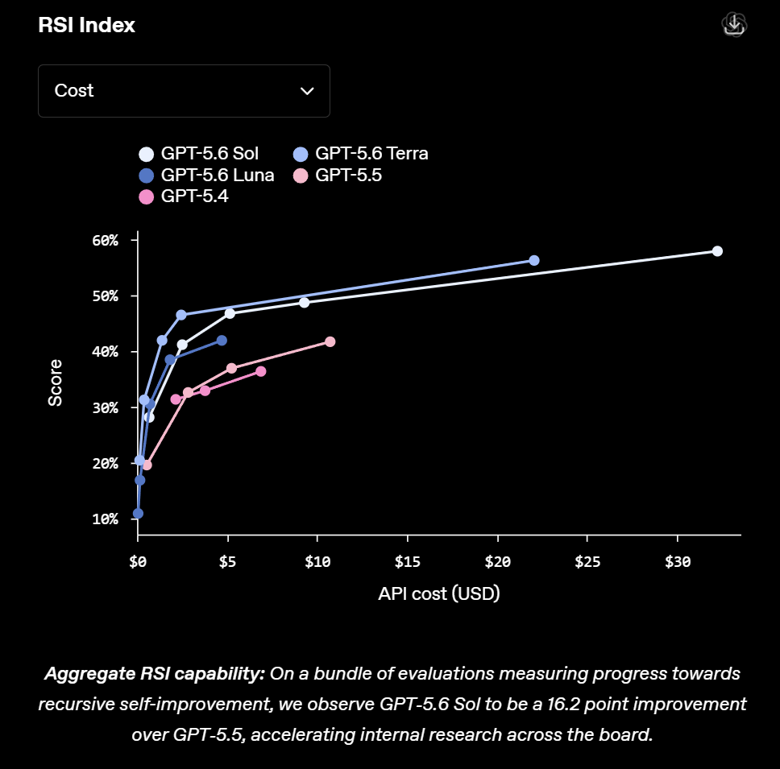

GATE 01
修改持久进入下一轮
不是只在一次回答里反思，而是留下代码、数据、权重或系统变化。
→
GATE 02
新能力继续改同一系统
改进结果要反过来提升下一轮的改进能力，而不只是完成一次外包任务。
→
GATE 03
循环已经实际跑过
看真实的多轮运行记录，不把「理论上可以继续」当成已经发生。
不是只在一次回答里反思，而是留下代码、数据、权重或系统变化。
改进结果要反过来提升下一轮的改进能力，而不只是完成一次外包任务。
看真实的多轮运行记录，不把「理论上可以继续」当成已经发生。
机器设计机器的能力若超过人类，改进可能反过来加速机器设计。
只有能证明自我改写提高效用，系统才执行修改。
语言模型改写代码优化脚手架，再按人类预设效用函数留优。
单 GPU、固定指标与短实验，让 Agent 可连续改代码、训练和回退。
理解代码与当前目标
提出候选实现
测试、速度、显存
把结果写入系统
决定下一次尝试

谁决定问题值得研究？谁证明新尺子比旧尺子更接近真实目标？
数据、训练算力、推理成本和现实实验时间，都可能让反馈失速。
错误也会递归；权限、审计、外部验证与回滚不能被同一指标吞掉。